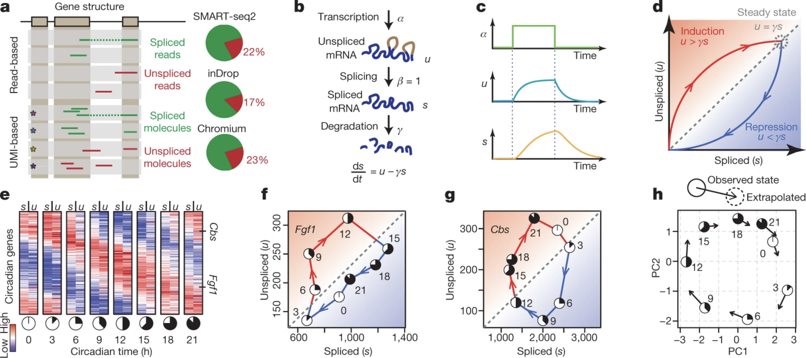
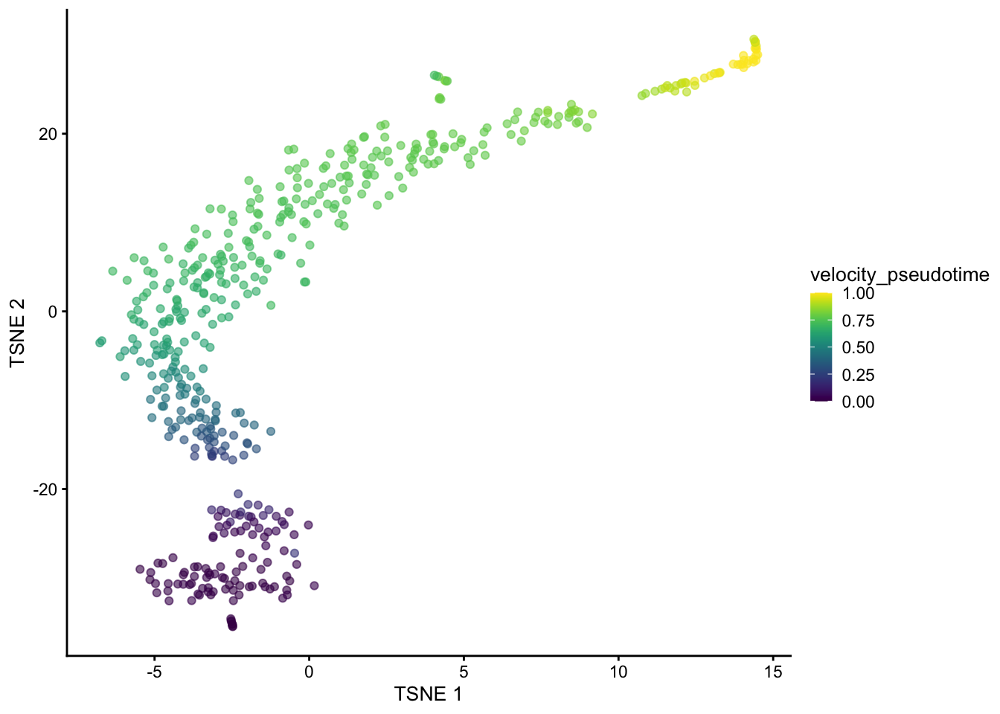
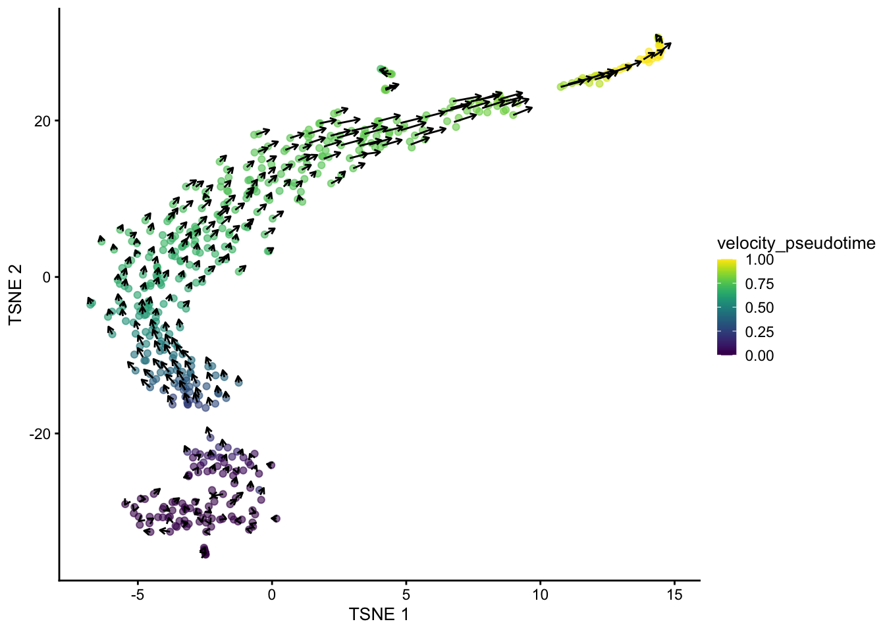

if (!requireNamespace("BiocManager", quietly = TRUE))
install.packages("BiocManager")
BiocManager::install(c("scRNAseq", "velociraptor", "scuttle", "scran"), dependencies = TRUE)[RNA Velocity] Trajectory inference and analysis of scRNA-seq data
Introduction
This notebook reviews the use of RNA velocity for lineage tracing with a few modern Python/R libraries, including scVelo and velociraptor, which build on original work from velocyto (last maintained in 2017).
What is RNA velocity? To understand RNA velocity, we must first recognize two ideas:
- The RNA metabolic process and its intrinsic dynamics:
- RNA is synthesized at a rate of \alpha
- RNA is spliced to remove introns and form mature mRNA at rate of \beta
- Mature mRNA is degraded after functioning at a rate of \gamma
- In steady state, the unspliced and spliced RNA are at an equilibrium (newly synthesized RNAs are exactly equal to the spliced RNAs, and similarly also to the degradated RNAs).
- Therefore, the break of the equilibrium state between unspliced and spliced RNAs is highly informative and can indicate whether a gene is in the induction or suppression state.
- Unspliced RNA indicates transcriptional speed
- Usually, the proportion of unspliced RNAs is very low in RNA-seq, especially for protocols with Poly-A enrichment, which is very common.
- Namely, in principle, only RNAs reaching 3' of the gene body can be captured.
- However, the unspliced RNAs still can be observed at a substantial proportion, usually covering 15-25%. The reason is still highly mysterious, partly biological for co-transcriptional splicing and partly technical for low efficiency on poly-A capturing.
While RNA velocity is still impacted by high signal-to-noise ratio, the ability to automatically detect the trajectory direction continues to draw research efforts to develop more accurate and robust methods.

velocyto).Setup
R
This notebook will utilize the R package velociraptor. velociraptor provides a lightweight interface between the Bioconductor SingleCellExperiment data structure and the scVelo Python package for RNA velocity calculations.
The interface is comparable to that of many other SingleCellExperiment-compatible functions, allowing users to plug in RNA velocity calculations into the existing Bioconductor analysis framework.
# Load libraries
library(scRNAseq) # data loading
library(scuttle)
library(scran)
library(velociraptor)
library(scater)
library(ggplot2)Python
scVelo is originally built in Python, and by default uses the AnnData format. Please check out the following official Jupyter Notebook tutorials for guidance:
Exploratory Data Analysis
To demonstrate, we will use a data set from Hermann et al. (2018), provided via the scRNAseq package. This data set contains gene-wise estimates of spliced and unspliced UMI counts for 2,325 mouse spermatogenic cells.
Load Data
sce <- HermannSpermatogenesisData()
sceclass: SingleCellExperiment
dim: 54448 2325
metadata(0):
assays(2): spliced unspliced
rownames(54448): ENSMUSG00000102693.1 ENSMUSG00000064842.1 ...
ENSMUSG00000064369.1 ENSMUSG00000064372.1
rowData names(0):
colnames(2325): CCCATACTCCGAAGAG AATCCAGTCATCTGCC ... ATCCACCCACCACCAG
ATTGGTGGTTACCGAT
colData names(1): celltype
reducedDimNames(0):
mainExpName: NULL
altExpNames(0):Downsampling for demonstration
The full data set requires up to 12 GB of memory for the example usage presented in this vignette. For demonstration purposes, we downsample the data set to the first 500 cells. Feel free to skip this downsampling step if you have access to sufficient memory.
sce <- sce[, 1:500]Basic RNA Velocity Workflow
We assume that feature selection has already been performed by the user using any method (see here for some suggestions). In this case, we will use the variance of log-expressions from scran to select the top 2000 genes.
sce <- logNormCounts(sce, assay.type=1)
dec <- modelGeneVar(sce)Warning in regularize.values(x, y, ties, missing(ties), na.rm = na.rm):
collapsing to unique 'x' valuestop.hvgs <- getTopHVGs(dec, n=2000)We can plug these choices into the scvelo() function with our SingleCellExperiment object. By default, scvelo() uses the steady-state approach to estimate velocities, though the stochastic and dynamical models implemented in scvelo can also be used by modifying the mode argument.
Note that automatic neighbor calculation is deprecated since scvelo==0.4.0 and will be removed in a future version. Instead, velociraptor computes neighbors with Scanpy (as per scVelo recommendations), and the number of neighbors should be supplied to scanpy.pp.neighbors as demonstrated below.
In particular, the default number of neighbors was 30 for scvelo.pp.moments while it is 15 for scanpy.pp.neighbors. Users should use scvelo.params=list(neighbors=list(n_neighbors=30L) to reproduce earlier results.
velo.out <- scvelo(
sce, subset.row=top.hvgs, assay.X="spliced",
scvelo.params=list(neighbors=list(n_neighbors=30L))
)computing moments based on connectivities
finished (0:00:00) --> added
'Ms' and 'Mu', moments of un/spliced abundances (adata.layers)
computing velocities
finished (0:00:00) --> added
'velocity', velocity vectors for each individual cell (adata.layers)
computing velocity graph (using 1/10 cores)
WARNING: Unable to create progress bar. Consider installing `tqdm` as `pip install tqdm` and `ipywidgets` as `pip install ipywidgets`,
or disable the progress bar using `show_progress_bar=False`.
finished (0:00:00) --> added
'velocity_graph', sparse matrix with cosine correlations (adata.uns)
computing terminal states
identified 1 region of root cells and 1 region of end points .
finished (0:00:00) --> added
'root_cells', root cells of Markov diffusion process (adata.obs)
'end_points', end points of Markov diffusion process (adata.obs)
--> added 'velocity_length' (adata.obs)
--> added 'velocity_confidence' (adata.obs)
--> added 'velocity_confidence_transition' (adata.obs)velo.outclass: SingleCellExperiment
dim: 2000 500
metadata(4): neighbors velocity_params velocity_graph
velocity_graph_neg
assays(6): X spliced ... Mu velocity
rownames(2000): ENSMUSG00000117819.1 ENSMUSG00000081984.3 ...
ENSMUSG00000022965.8 ENSMUSG00000094660.2
rowData names(4): velocity_gamma velocity_qreg_ratio velocity_r2
velocity_genes
colnames(500): CCCATACTCCGAAGAG AATCCAGTCATCTGCC ... CACCTTGTCGTAGGAG
TTCCCAGAGACTAAGT
colData names(7): velocity_self_transition root_cells ...
velocity_confidence velocity_confidence_transition
reducedDimNames(1): X_pca
mainExpName: NULL
altExpNames(0):In the above call, we use the "spliced" count matrix as a proxy for the typical exonic count matrix. Technically, the latter is not required for the velocity estimation, but scvelo needs to perform a PCA and nearest neighbors search, and we want to ensure that the neighbors detected inside the function are consistent with the rest of the analysis workflow (performed on the exonic counts).
There are some subtle differences between the spliced count matrix and the typical exonic count matrix - see ?scvelo for some commentary about this - but the spliced counts are generally a satisfactory replacement if the latter is not available.
The scvelo() function produces a SingleCellExperiment containing all of the outputs of the calculation in Python. Of particular interest is the velocity_pseudotime vector that captures the relative progression of each cell along the biological process driving the velocity vectors.
We can visualize this effect below in a t-SNE plot generated by scater on the top HVGs.
set.seed(100) # for reproducibility
sce <- runPCA(sce, subset_row=top.hvgs)
sce <- runTSNE(sce, dimred="PCA", perplexity = 30)
sce$velocity_pseudotime <- velo.out$velocity_pseudotime
plotTSNE(sce, colour_by="velocity_pseudotime")
It is also straightforward to embed the velocity vectors into our desired low-dimensional space, as shown below for the t-SNE coordinates. This uses a grid-based approach to summarize the per-cell vectors into local representatives for effective visualization.
embedded <- embedVelocity(reducedDim(sce, "TSNE"), velo.out)ℹ Using the 'X' assay as the X matrixcomputing velocity embedding
finished (0:00:00) --> added
'velocity_target', embedded velocity vectors (adata.obsm)grid.df <- gridVectors(sce, embedded, use.dimred = "TSNE")
plotTSNE(sce, colour_by="velocity_pseudotime") +
geom_segment(data=grid.df, mapping=aes(x=start.1, y=start.2,
xend=end.1, yend=end.2, colour=NULL), arrow=arrow(length=unit(0.05, "inches")))
And that's it, really.
Advanced options
scvelo() interally performs a PCA step that we can bypass by supplying our own PC coordinates.
It is often the case that we have already performed PCA in the earlier analysis steps, so we can just re-use those results to:
- save time and
- improve consistency with the other steps.
Here, we computed the PCA coordinates in runPCA() above, so let's just recycle that:
# Only setting assay.X= for the initial AnnData creation,
# it is not actually used in any further steps.
velo.out2 <- scvelo(sce, assay.X=1, subset.row=top.hvgs, use.dimred="PCA") computing moments based on connectivities
finished (0:00:00) --> added
'Ms' and 'Mu', moments of un/spliced abundances (adata.layers)
computing velocities
finished (0:00:00) --> added
'velocity', velocity vectors for each individual cell (adata.layers)
computing velocity graph (using 1/10 cores)
finished (0:00:00) --> added
'velocity_graph', sparse matrix with cosine correlations (adata.uns)
computing terminal states
identified 3 regions of root cells and 1 region of end points .
finished (0:00:00) --> added
'root_cells', root cells of Markov diffusion process (adata.obs)
'end_points', end points of Markov diffusion process (adata.obs)
--> added 'velocity_length' (adata.obs)
--> added 'velocity_confidence' (adata.obs)
--> added 'velocity_confidence_transition' (adata.obs)velo.out2class: SingleCellExperiment
dim: 2000 500
metadata(4): neighbors velocity_params velocity_graph
velocity_graph_neg
assays(6): X spliced ... Mu velocity
rownames(2000): ENSMUSG00000117819.1 ENSMUSG00000081984.3 ...
ENSMUSG00000022965.8 ENSMUSG00000094660.2
rowData names(4): velocity_gamma velocity_qreg_ratio velocity_r2
velocity_genes
colnames(500): CCCATACTCCGAAGAG AATCCAGTCATCTGCC ... CACCTTGTCGTAGGAG
TTCCCAGAGACTAAGT
colData names(7): velocity_self_transition root_cells ...
velocity_confidence velocity_confidence_transition
reducedDimNames(1): X_pca
mainExpName: NULL
altExpNames(0):velociraptor also provides an option to use the scvelo pipeline without modification, i.e., relying on their normalization and feature selection.
This sacrifices consistency with other Bioconductor workflows but enables perfect mimicry of a pure Python-based analysis. In this case, arguments like subset.row= are simply ignored.
velo.out3 <- scvelo(sce, assay.X=1, use.theirs=TRUE)WARNING: Did not normalize X as it looks processed already. To enforce normalization, set `enforce=True`.
WARNING: Did not normalize spliced as it looks processed already. To enforce normalization, set `enforce=True`.
WARNING: Did not normalize unspliced as it looks processed already. To enforce normalization, set `enforce=True`.
Logarithmized X.
computing moments based on connectivities
finished (0:00:00) --> added
'Ms' and 'Mu', moments of un/spliced abundances (adata.layers)
computing velocities
finished (0:00:01) --> added
'velocity', velocity vectors for each individual cell (adata.layers)
computing velocity graph (using 1/10 cores)
finished (0:00:00) --> added
'velocity_graph', sparse matrix with cosine correlations (adata.uns)
computing terminal states
identified 1 region of root cells and 1 region of end points .
finished (0:00:00) --> added
'root_cells', root cells of Markov diffusion process (adata.obs)
'end_points', end points of Markov diffusion process (adata.obs)
--> added 'velocity_length' (adata.obs)
--> added 'velocity_confidence' (adata.obs)
--> added 'velocity_confidence_transition' (adata.obs)velo.out3class: SingleCellExperiment
dim: 54448 500
metadata(5): log1p neighbors velocity_params velocity_graph
velocity_graph_neg
assays(6): X spliced ... Mu velocity
rownames(54448): ENSMUSG00000102693.1 ENSMUSG00000064842.1 ...
ENSMUSG00000064369.1 ENSMUSG00000064372.1
rowData names(4): velocity_gamma velocity_qreg_ratio velocity_r2
velocity_genes
colnames(500): CCCATACTCCGAAGAG AATCCAGTCATCTGCC ... CACCTTGTCGTAGGAG
TTCCCAGAGACTAAGT
colData names(11): initial_size_unspliced initial_size_spliced ...
velocity_confidence velocity_confidence_transition
reducedDimNames(1): X_pca
mainExpName: NULL
altExpNames(0):Advanced users can tinker with the settings of individual scvelo steps by setting named lists of arguments in the scvelo.params argument.
For example, to tinker with the behavior of the recover_dynamics step, we could do:
velo.out4 <- scvelo(sce, assay.X=1, subset.row=top.hvgs,
scvelo.params=list(recover_dynamics=list(max_iter=20)))computing moments based on connectivities
finished (0:00:00) --> added
'Ms' and 'Mu', moments of un/spliced abundances (adata.layers)
computing velocities
finished (0:00:00) --> added
'velocity', velocity vectors for each individual cell (adata.layers)
computing velocity graph (using 1/10 cores)
finished (0:00:00) --> added
'velocity_graph', sparse matrix with cosine correlations (adata.uns)
computing terminal states
identified 2 regions of root cells and 1 region of end points .
finished (0:00:00) --> added
'root_cells', root cells of Markov diffusion process (adata.obs)
'end_points', end points of Markov diffusion process (adata.obs)
--> added 'velocity_length' (adata.obs)
--> added 'velocity_confidence' (adata.obs)
--> added 'velocity_confidence_transition' (adata.obs)velo.out4class: SingleCellExperiment
dim: 2000 500
metadata(4): neighbors velocity_params velocity_graph
velocity_graph_neg
assays(6): X spliced ... Mu velocity
rownames(2000): ENSMUSG00000117819.1 ENSMUSG00000081984.3 ...
ENSMUSG00000022965.8 ENSMUSG00000094660.2
rowData names(4): velocity_gamma velocity_qreg_ratio velocity_r2
velocity_genes
colnames(500): CCCATACTCCGAAGAG AATCCAGTCATCTGCC ... CACCTTGTCGTAGGAG
TTCCCAGAGACTAAGT
colData names(7): velocity_self_transition root_cells ...
velocity_confidence velocity_confidence_transition
reducedDimNames(1): X_pca
mainExpName: NULL
altExpNames(0):References
Prior Workshops / Websites
Papers / Articles
Hermann, Brian P, Keren Cheng, Anukriti Singh, Lorena Roa-De La Cruz, Kazadi N Mutoji, I-Chung Chen, Heidi Gildersleeve, et al. 2018. "The Mammalian Spermatogenesis Single-Cell Transcriptome, from Spermatogonial Stem Cells to Spermatids." Cell Rep. 25: 1650–1667.e8.
Code Internals
Session Info
sessionInfo()R version 4.4.1 (2024-06-14)
Platform: aarch64-apple-darwin20
Running under: macOS Sonoma 14.5
Matrix products: default
BLAS: /Library/Frameworks/R.framework/Versions/4.4-arm64/Resources/lib/libRblas.0.dylib
LAPACK: /Library/Frameworks/R.framework/Versions/4.4-arm64/Resources/lib/libRlapack.dylib; LAPACK version 3.12.0
locale:
[1] en_US.UTF-8/en_US.UTF-8/en_US.UTF-8/C/en_US.UTF-8/en_US.UTF-8
time zone: America/New_York
tzcode source: internal
attached base packages:
[1] stats4 stats graphics grDevices utils datasets methods
[8] base
other attached packages:
[1] scater_1.32.1 ggplot2_3.5.1
[3] velociraptor_1.14.3 scran_1.32.0
[5] scuttle_1.14.0 scRNAseq_2.18.0
[7] SingleCellExperiment_1.26.0 SummarizedExperiment_1.34.0
[9] Biobase_2.64.0 GenomicRanges_1.56.1
[11] GenomeInfoDb_1.40.1 IRanges_2.38.1
[13] S4Vectors_0.42.1 BiocGenerics_0.50.0
[15] MatrixGenerics_1.16.0 matrixStats_1.3.0
loaded via a namespace (and not attached):
[1] rstudioapi_0.16.0 jsonlite_1.8.8
[3] magrittr_2.0.3 ggbeeswarm_0.7.2
[5] GenomicFeatures_1.56.0 gypsum_1.0.1
[7] farver_2.1.2 rmarkdown_2.27
[9] BiocIO_1.14.0 zlibbioc_1.50.0
[11] vctrs_0.6.5 memoise_2.0.1
[13] Rsamtools_2.20.0 DelayedMatrixStats_1.26.0
[15] RCurl_1.98-1.16 htmltools_0.5.8.1
[17] S4Arrays_1.4.1 AnnotationHub_3.12.0
[19] curl_5.2.1 BiocNeighbors_1.22.0
[21] Rhdf5lib_1.26.0 SparseArray_1.4.8
[23] rhdf5_2.48.0 alabaster.base_1.4.2
[25] htmlwidgets_1.6.4 basilisk_1.16.0
[27] alabaster.sce_1.4.0 httr2_1.0.2
[29] cachem_1.1.0 GenomicAlignments_1.40.0
[31] igraph_2.0.3 lifecycle_1.0.4
[33] pkgconfig_2.0.3 rsvd_1.0.5
[35] Matrix_1.7-0 R6_2.5.1
[37] fastmap_1.2.0 GenomeInfoDbData_1.2.12
[39] digest_0.6.36 colorspace_2.1-1
[41] AnnotationDbi_1.66.0 dqrng_0.4.1
[43] irlba_2.3.5.1 ExperimentHub_2.12.0
[45] RSQLite_2.3.7 beachmat_2.20.0
[47] labeling_0.4.3 filelock_1.0.3
[49] fansi_1.0.6 httr_1.4.7
[51] abind_1.4-5 compiler_4.4.1
[53] withr_3.0.1 bit64_4.0.5
[55] BiocParallel_1.38.0 viridis_0.6.5
[57] DBI_1.2.3 HDF5Array_1.32.0
[59] alabaster.ranges_1.4.2 alabaster.schemas_1.4.0
[61] rappdirs_0.3.3 DelayedArray_0.30.1
[63] rjson_0.2.21 bluster_1.14.0
[65] tools_4.4.1 vipor_0.4.7
[67] beeswarm_0.4.0 glue_1.7.0
[69] restfulr_0.0.15 rhdf5filters_1.16.0
[71] grid_4.4.1 Rtsne_0.17
[73] cluster_2.1.6 generics_0.1.3
[75] gtable_0.3.5 ensembldb_2.28.0
[77] BiocSingular_1.20.0 ScaledMatrix_1.12.0
[79] metapod_1.12.0 utf8_1.2.4
[81] XVector_0.44.0 ggrepel_0.9.5
[83] BiocVersion_3.19.1 pillar_1.9.0
[85] limma_3.60.4 dplyr_1.1.4
[87] BiocFileCache_2.12.0 lattice_0.22-6
[89] rtracklayer_1.64.0 bit_4.0.5
[91] tidyselect_1.2.1 locfit_1.5-9.10
[93] Biostrings_2.72.1 knitr_1.48
[95] gridExtra_2.3 ProtGenerics_1.36.0
[97] edgeR_4.2.1 xfun_0.46
[99] statmod_1.5.0 UCSC.utils_1.0.0
[101] lazyeval_0.2.2 yaml_2.3.10
[103] evaluate_0.24.0 codetools_0.2-20
[105] tibble_3.2.1 alabaster.matrix_1.4.2
[107] BiocManager_1.30.23 cli_3.6.3
[109] reticulate_1.38.0 munsell_0.5.1
[111] zellkonverter_1.14.1 Rcpp_1.0.13
[113] dir.expiry_1.12.0 dbplyr_2.5.0
[115] png_0.1-8 XML_3.99-0.17
[117] parallel_4.4.1 blob_1.2.4
[119] basilisk.utils_1.16.0 AnnotationFilter_1.28.0
[121] sparseMatrixStats_1.16.0 bitops_1.0-8
[123] viridisLite_0.4.2 alabaster.se_1.4.1
[125] scales_1.3.0 crayon_1.5.3
[127] rlang_1.1.4 cowplot_1.1.3
[129] KEGGREST_1.44.1